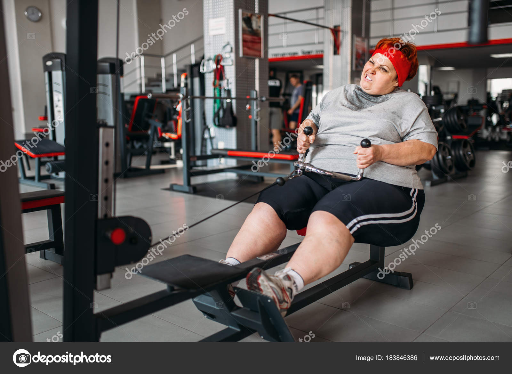

Остальные 3 способа похудеть. ЖМИ!
Нет лучшего способа получить нагрузку на всё тело, чем интервальные тренировки. Совмещайте упражнения разной интенсивности для максимального результата за самое короткое время.
Вы можете довольно успешно ходить и бегать по ровной земле, но, когда вы попробуете подняться вверх по отвесной стене, поймёте, что это довольно трудное занятие. Такая тренировка не только поможет вам сжечь около 118 килокалорий за 10 минут, но и покажет, какое на самом деле большое значение имеет ваш лишний вес.
Интенсивная тренировка на тренажёре, включающая в себя отрезки обычной интенсивности и спринты, поможет вам сжечь 139 килокалорий за 10 минут.
Вы не потратите много энергии, просто стоя на поле, но интенсивная борьба за мяч, ускорения и дриблинг лишат вас 107 килокалорий за 10 минут. Также это отличная тренировка для всего тела, потому что она включает в себя много различных движений не только для ног, но и для других групп мышц.

Простые упражнения с гантелями, выполненные с максимальным уровнем интенсивности, могут нагрузить вас за 10 минут почти как продолжительная тренировка. Различные прыжки, приседания и махи с отягощением помогут не только сбросить лишние килограммы, но и обрести красивую мускулатуру.
Нет лучшего способа разогнать свой пульс, практически не покидая своего места, чем прыжки со скакалкой. Если делать это даже в умеренном темпе (это когда вы ещё можете разговаривать в процессе), то ваш организм потеряет около 107 килокалорий за 10 минут. Разумеется, прыгать столько времени у многих не получится, поэтому попробуйте делать это 40 секунд, а потом 20 секунд отдыхать. И так 10 раз подряд.
Степ-аэробика по-прежнему является одним из лучших способов сжечь много калорий за малое количество времени — до 107 килокалорий за 10 минут. Это интенсивная аэробика с использованием любой подставки, имитирующей ступеньку. Движения, выполняемые в процессе тренировки, совершенно естественны и доступны любому, независимо от состояния здоровья и уровня подготовки. К тому же занятия этим видом физической активности не требуют дорогостоящего оборудования — их легко можно выполнить дома.
{kind=link}